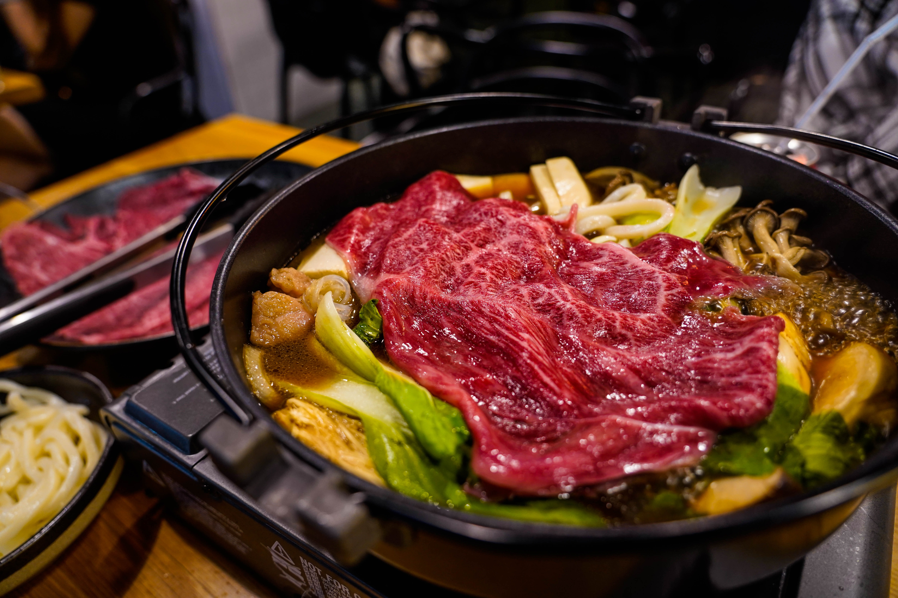
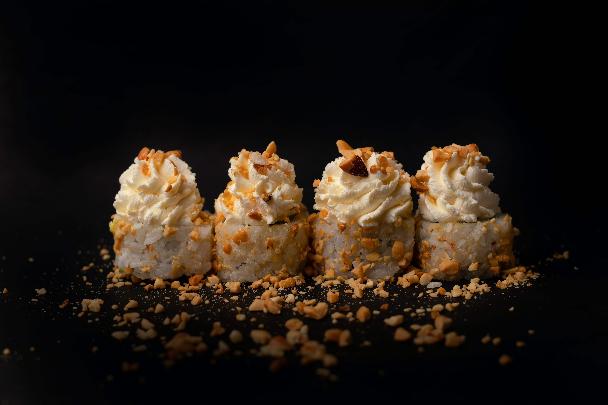

Meu portfólio




Especialista em wagyu
Nasci em 1979 na cidade de Mimitsu, província de Miyazaki, ao sul do Japão, sou sobrinho de um criador de gado de uma pequena fazenda e, por isso, tive familiaridade com a pecuária desde a juventude. Estudei gastronomia com o objetivo de me relacionar com o mundo através da cozinha. Consolidei minha formação cultural na Kyoto Culinary Art College. Em seguida, fui a Paris, onde trabalhei no Le Taillevent, bistrô que conquistou duas estrelas Michelin. De volta ao Japão, trabalhei no Westin Hotel Osaka. Em 2018, resolvi atuar no exterior. Participei da criação de restaurantes em Cingapura e Bangkok, sendo, nesta última cidade, uma casa especializada na carne: o Homura Wagyu Kaiseki. Atualmente tenho a minha base no Japão e divulgo a carne wagyu para o exterior, mostrando todas as potencialidades de utilização deste insumo autenticamente japonês. Proteger a tradição, a cultura e a tecnologia japonesa e transmiti-las às pessoas no exterior. Esta é a minha missão.
Meu tio administrava um pequeno rancho, mas não teve sucessor e foi fechado devido ao aumento do custo da criação a cada ano.
No Kyoto Culinary College, aprendi sobre culinária japonesa, francesa e italiana. Com o objetivo de me relacionar com o mundo através da cozinha e obter uma licença de chef.
Em 2008 me mudei para Paris onde trabalhei no Le Taillevent, bistrô fundado em 1946 por André Vrinat e que conquistou duas estrelas Michelin.
Em 2015 voltei para o Japão para explorar a culinária japonesa e aflorar todo o conhecimento que eu adquiri durante a minha formação.
Em 2018, resolvi atuar no exterior. Participei da criação de restaurantes em Cingapura e Bangkok, sendo, nesta última cidade, uma casa especializada na carne: o Homura Wagyu Kaiseki.
Atualmente tenho a minha base no Japão e divulgo a carne wagyu para o exterior, mostrando todas as potencialidades de utilização deste insumo autenticamente japonês, participando de eventos, festivais e workshops pelo mundo.